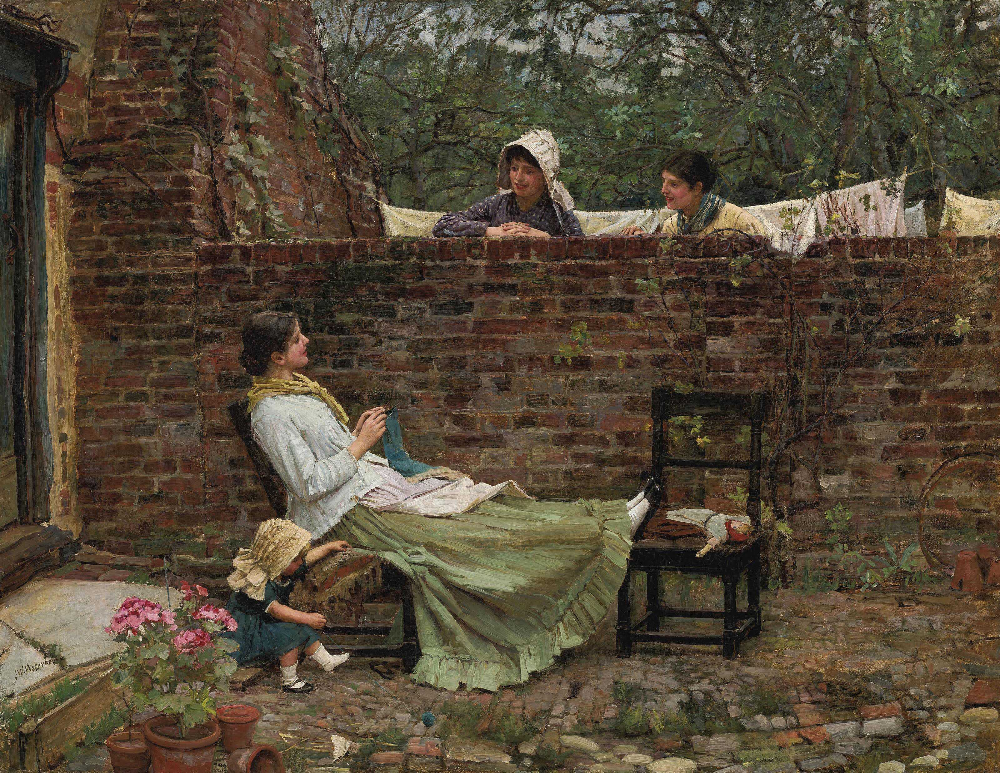
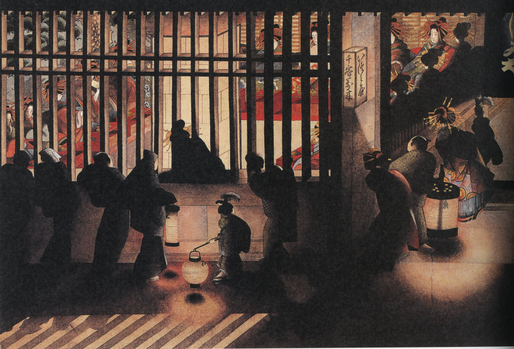

Arthur Streeton - Early Summer-Gorse in Bloom - 1888
Arthur Streeton - Golden Summer, Eaglemont - 1889
Arthur Streeton - The Railway Station Redfern - 1893
Arthur Streeton - The Purple Noon's transparent might - 1896
Arnoldus Bloemers
John Atkinson Grimshaw - Liverpool Lights - 1887
John Atkinson Grimshaw - Sand, Sea and Sky, a Summer Phantasy - 1892